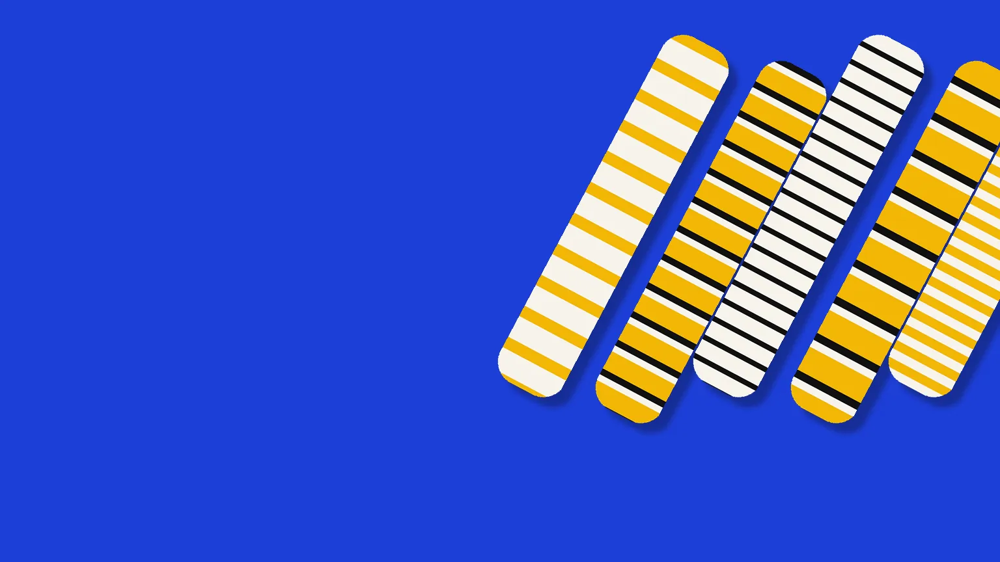
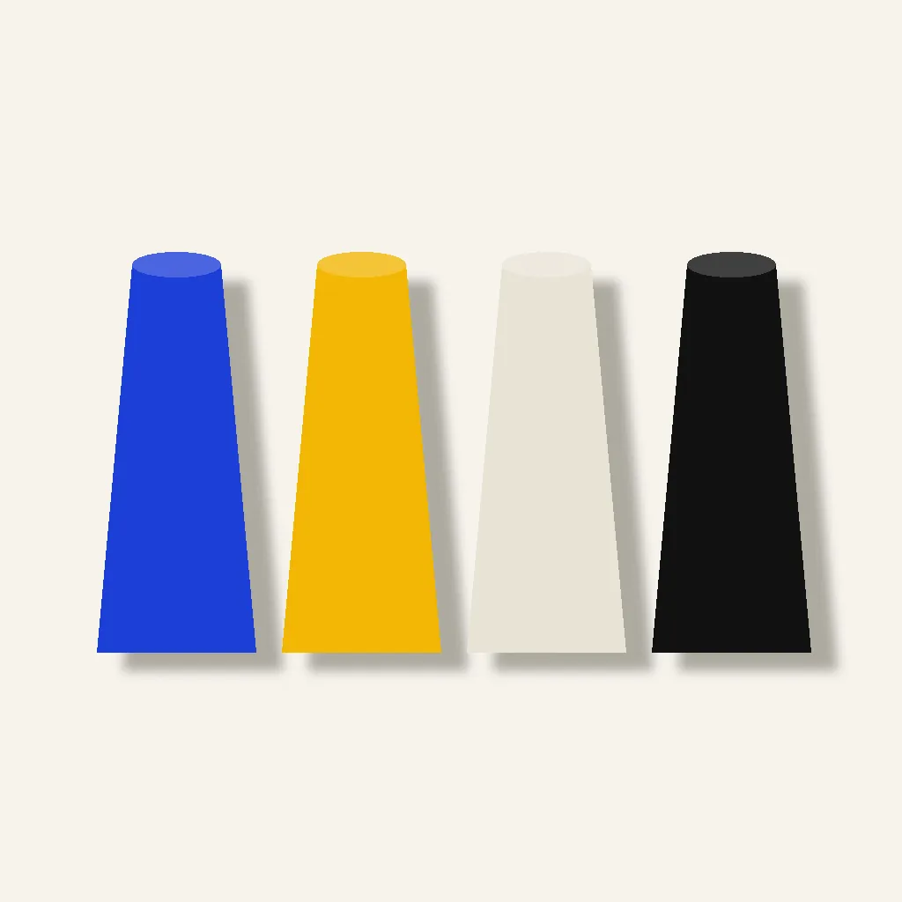
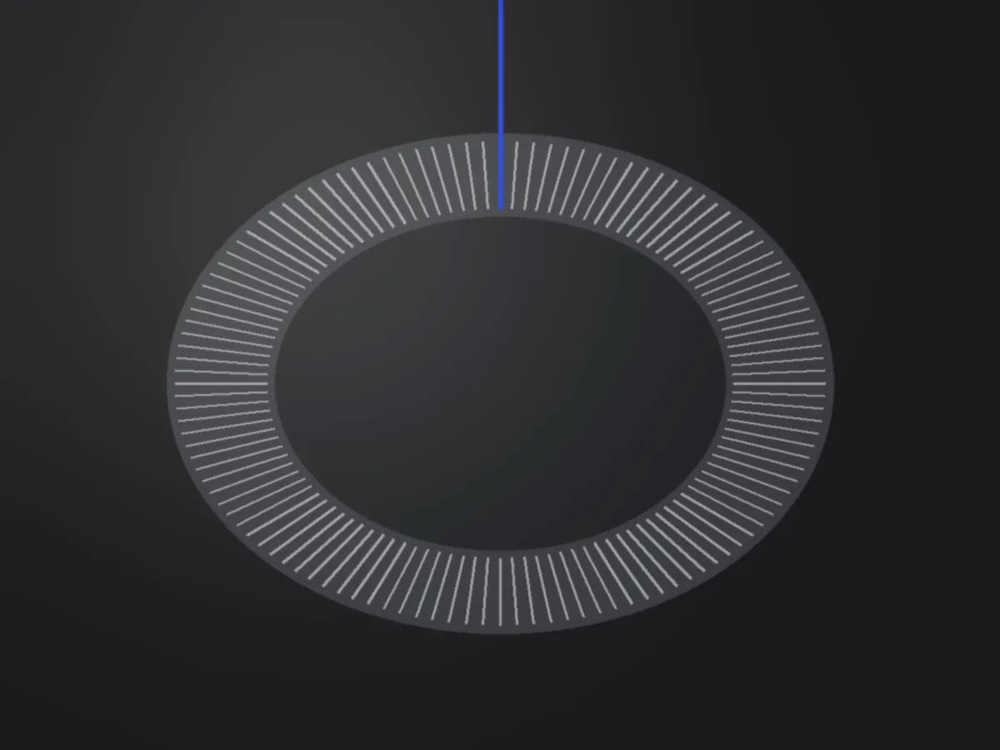
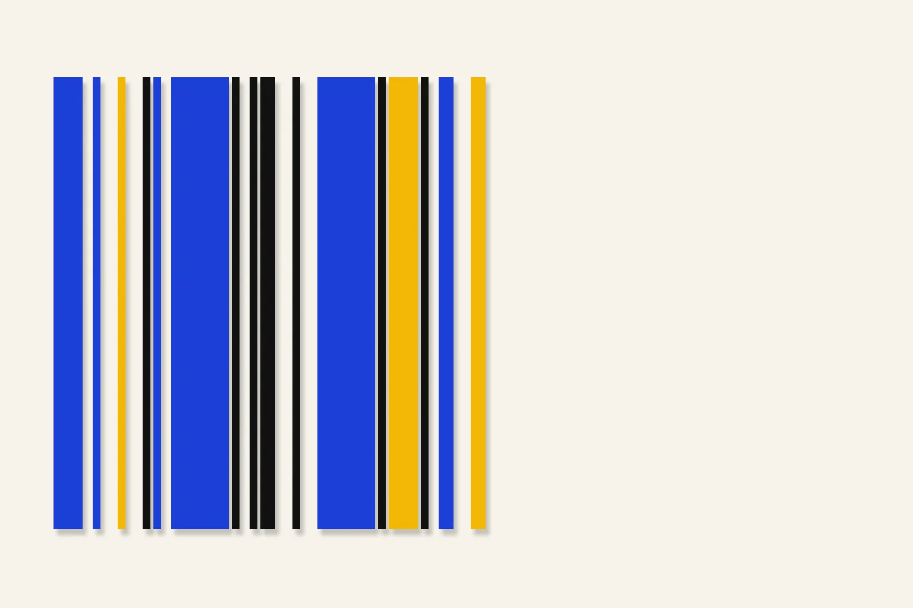

画像はAI生成のイメージです
縞しか、
編まない。
SHIMAWOシマヲ
日本の小さな工場で、
縞の靴下だけを編むブランドです。4つの幅と4色の糸だけで、季節ごとに縞をつくります。
- 1足
- 2,420円
- 3足組
- 6,600円
税込・22〜25cm／25〜28cm
01シマヲについて
柄を増やさず、
縞の幅だけを変える。
無地も、水玉も、ワンポイントも編みません。決まった4つの幅と4色の糸の組み合わせだけで、季節ごとに新しい縞をつくります。
できた靴下は、1足ずつ紙の帯で巻いてお届けします。
縞の幅の決め方へ
幅は4つ

02制作の背景
古い編み機で、
一足ずつ。
針の数が少ない古い編み機は、そのぶん縞の境目がくっきり出ます。
- 編み機
- 6台
- 動いてきた年数
- 40年近く
- 糸の仕入れ先
- 毎年、同じ紡績工場から

03縞の幅の決め方
縞の幅は、
色紙を切って決める。
- 切る4色の色紙を、4つの幅の帯に切ります。
- 並べる机に並べ、離れて見て、近くで見て、また並べ替えます。
- 編む決まった並びが、そのまま編み機の設定になります。
04今の取り組み
冬の縞「からしと黒」を、
11月から。
太いからしに、細い黒を一本ずつ。この冬の目じるしは、つま先の近くの生成りの一本です。
| 送料 | 全国一律。3足組は無料 | 550円 |
|---|---|---|
| 紙の帯 | どの靴下にも付きます | 無料 |
| 紙箱 | 無地。1つにつき | 220円 |